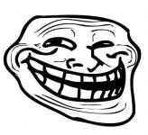

<!doctype html>
<!--
Title:
Панель балуна у геообъектов

Description:
Панель балуна у различных геообъектов.
Памятка по терминам: https://wiki.yandex-team.ru/eva/testing/Projects/maps-api/

Components:
balloon

Estimated time:
90000

Precondition:
Открыть ссылку ${currentPagePath}

Step:
  Action:
  Осмотреть карту и элементы на ней. 

  Expectation:
  Карта отобразилась корректно.
  На карте спан водной области с остравами "Понта-Делгада".
  На спане карты расположены геообъекты: прямая вертикальная линия, прямоугольник, два треугольника, круг, метка коллекции.

Step:
  Action:
  Поводить курсором по объектам. 

  Expectation:
  При наведении курсора на линию, хинт - "polyline hint", на прямоугольник - "rectangle hint", на метку - "placemark hint", круг - "circle hint", оба треугольника - "polygon hint".

Step:
  Action:
  Выполнить клик в линию. 

  Expectation:
  Происходит смещение спана, линия перемещается в центр спана, внизу появляется панель балуна с множеством строчек "ааа....".
  
Step:
  Action:
  Выполнить клик в прямоугольник. 

  Expectation:
  Происходит смещение спана, прямоугольник перемещается в центр спана, внизу появляется панель балуна с картинкой - "рожицей".

Step:
  Action:
  Выполнить клик в метку коллекции. 

  Expectation:
  Происходит смещение спана, метка коллекции перемещается в центр спана, внизу появляется пустая панель балуна.

Step:
  Action:
  Выполнить клик в треугольник большего размера. 

  Expectation:
  Происходит смещение спана, треугольник перемещается в центр спана, внизу появляется панель балуна с заголовком "header", телом - картинкой "рожицей", футером - "loooo....ong footer".

Step:
  Action:
  Выполнить клик в круг. 

  Expectation:
  Происходит смещение спана, круг перемещается в центр спана, внизу появляется панель балуна с заголовком "header", телом - текстом "body", футером - "loooo....ong footer".

Step:
  Action:
  Выполнить клик в треугольник меньшего размера. 

  Expectation:
  Происходит смещение спана, треугольник перемещается в центр спана, внизу появляется панель балуна с заголовком "header", телом - картинкой "рожицей", футером - "loooo....ong footer".
-->
<html>
<head>
    <title>API 2.1</title>
    <meta http-equiv="Content-Type" content="text/html; charset=utf-8"/>

    <script src="../../../helper.js"></script>
    <script src="../../../js/geoObjectCollection.js"></script>
    <script type="text/javascript">
        Api('init');
        function init(ym) {
            var map = myMap = new ym.Map('map', {
                        center: [59.94, 30.33],
                        zoom: 12,
                        controls: ["fullscreenControl", "typeSelector"]
                    }, {
                        balloonPanelMaxMapArea: Infinity,
                        geoObjectStrokeWidth: 8,
                        geoObjectOpenEmptyBalloon: true
                    }),
                    log = new Log(),
                    collection = new GeoObjectCollection(ym), txt = '', i = 0;

            addGrid(map);
            log.info('Balloons:');
            log.info('placemark - empty');
            log.info('circle - header, body, long footer');
            log.info('rectangle - image');
            log.info('polyline - long lines of text');
            log.info('polygon - header, image, long footer');

            map.geoObjects.add(collection);
            map.setBounds(collection.getBounds());

            // разное содержимое для баллунов

            while (i++ < 80) {
                txt += 'a';
            }

            // пустой
            collection.getPlacemark().properties.set({
                balloonContent: ''
            });

            // много строк
            collection.getPolyline().properties.set({
                balloonContent: [txt, txt, txt, txt, txt, txt, txt, txt, txt, txt, txt, txt, txt, txt, txt, txt, txt].join("<br>")
            });

            // картинка
            collection.getRectangle().properties.set({
                balloonContent: ""
            });

            // картинка с хедером и футером
            collection.getPolygon().properties.set({
                balloonContentHeader: "header",
                balloonContentBody: "",
                balloonContentFooter: "looooooooooooooooooooooooooooooooooooooooooooong footer"
            });

            // картинка с хедером и футером
            collection.getCircle().properties.set({
                balloonContentHeader: "header",
                balloonContentBody: "body",
                balloonContentFooter: "looooooooooooooooooooooooooooooooooooooooooooong footer"
            });
        }
    </script>
</head>
<body style="position: relative; padding: 0; margin: 0;">
<div id="map" style="height: 512px; width: 512px; border: 1px solid red;">
</div>
</body>
</html>
